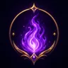
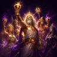
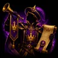
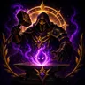
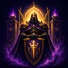
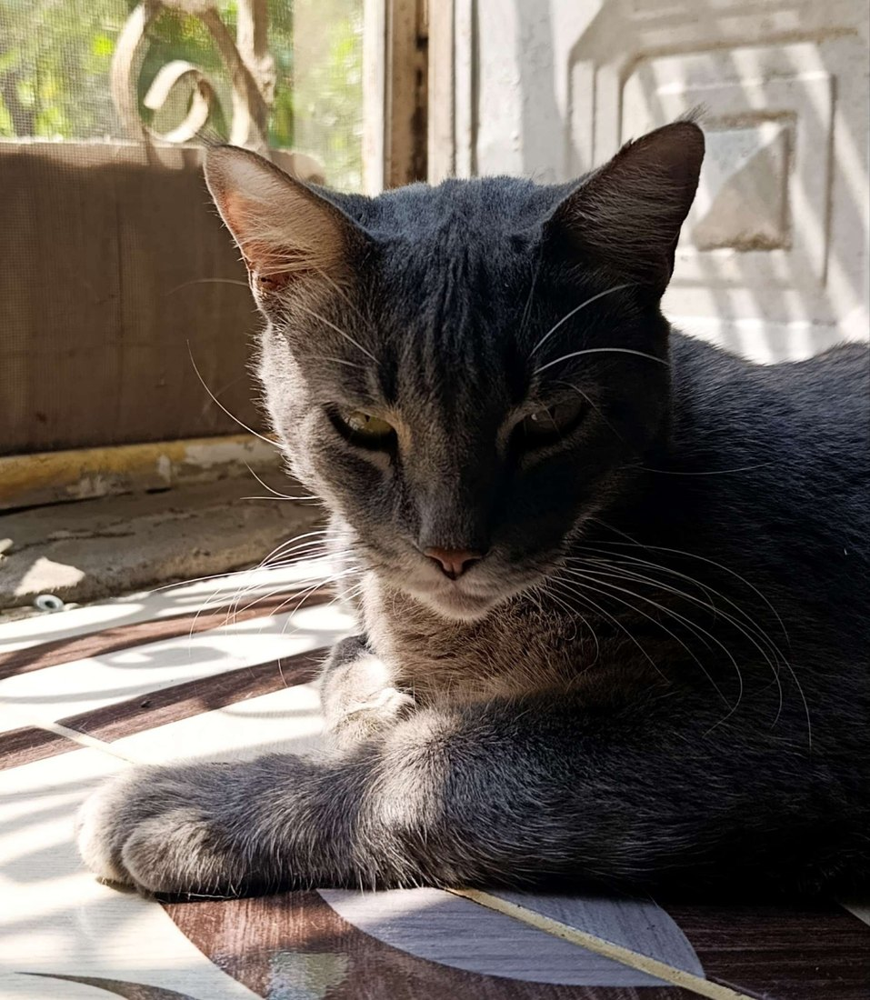

Gloria
Cada sub regalada se convierte en 1 Gloria. Los Heraldos la usan para elevar a otros elegidos ante el trono.
Estas páginas no fueron escritas: fueron reveladas. Aquí descansa todo el saber que un pequeño Dios necesita para caminar el reino — forjar su fortuna en Fotopatas, invocar los rituales ante El Eterno, alzarse cuando despierte el Titán del Vacío y sobrevivir a lo que acecha entre las Sombras.
Antes de tocar los altares, aprende las palabras que se repiten en el reino. Cada nombre tiene peso, cada ofrenda tiene marca y cada rango abre una puerta distinta.
Cada sub regalada se convierte en 1 Gloria. Los Heraldos la usan para elevar a otros elegidos ante el trono.

Cada bit entregado despierta 1 Alma. Las Almas alimentan el tesoro y fortalecen la llama del reino.

Fotopatas de Zawa: la moneda del chat. Sirve para cofres, duelos, rituales, apuestas y sombras del Mercado.
Portadores del sello VIP. Sus nombres quedan visibles porque el trono reconoce su presencia en el reino.

Suscriptores del reino, divididos por naturaleza: Dioses Olímpicos, Titanes y Primordiales.

Quien entrega Gloria a los demás habitantes del Reino y esparce las crónicas del Reino por todas partes. Su marca se mide en Gloria.

Quien ofrece Almas al tesoro del Reino. Su estela gloriosa se mide en Almas y queda registrada ante el altar de la gloria.

Custodio del orden. Protege las puertas, calma el caos y sostiene las leyes del reino.
En estos altares no se muestran números vacíos: se tallan presencias. Aquí descansan los nombres de quienes sostienen la llama, elevan a otros elegidos, alimentan el tesoro y protegen las puertas del Reino de Zawa.
¿Primera vez en el Reino? Aquí empieza tu camino. Cada poder se invoca escribiendo su palabra en el chat del directo (Twitch o Kick). Si un poder te confunde, pregúntale al grimorio con !info; si quieres ver una rama completa, ábrela con !PZ. Estos son tus primeros pasos.
Tu punto de partida: muestra todas las rutas del reino y por dónde puedes ir.
!zmap⌨ Escríbelo en el chat del directoAbre una rama completa de poderes. Ej: !PZ sapere, !PZ economia, !PZ sombras.
!PZ [rama]⌨ En el chat del directo¿No sabes qué hace algo? El grimorio te lo explica. Ej: !info cofre, !info robar.
!info [poder]⌨ En el chat del directoRevisa tus FPZ antes de apostar, abrir cofres, invocar a Rah o entrar al mercado.
!wacal⌨ En el chat del directoConsigue FPZ con cofres, duelos, ruleta, misiones y los eventos activos del reino.
!cofre⌨ En el chat del directoCuando domines las reglas, reta al destino y deja que el chat decida tu suerte.
!SalRah⌨ En el chat del directoLa primera señal del Reino: si la llama está encendida, Zawa está en directo; si descansa, el portal aguarda el próximo llamado.
Cuando la llama esté encendida, el Reino estará despierto. Si la llama descansa, el portal permanecerá sellado hasta el próximo llamado.
Cuando un evento sea invocado, el Heraldo abrirá el llamado en esta sala.
Los guardianes que sostienen el orden, la voz y las puertas del Reino de Zawa.

Zawa, El Eterno, convierte cada directo en un punto de encuentro donde la risa, la energía y las ideas se cruzan sin pedir permiso. Llegas por curiosidad, te quedas por el caos… y cuando te das cuenta, ya eres parte del Reino.
ZawaEl Eterno

EdGhost21Staff / moderador
Zawa, El Eterno.
Observa en silencio, aparece cuando hace falta y mantiene la puerta del Reino protegida.
Susurra un nombre al buscador o elige un pergamino. Cada ficha guarda el costo, el acceso y la leyenda de cada poder del reino.
Un espacio rápido para que el Consejo no pierda comandos importantes durante el directo.
Introduce el sello de mod para revelar los comandos reservados. El acceso solo dura durante esta sesión del navegador.
Lista editable desde data/mod-commands.json. Úsala como chuleta rápida durante el stream.
La estructura oficial de la comunidad para seguidores, subs, VIPs, mods y miembros destacados.
Estas reglas se muestran tal cual para que no exista confusión ni espacio para interpretaciones convenientes.
Reglas de discord 📐📏Reglas del servidor📏📐: 🏮 Leer las normas es obligatorio. No conocerlas no justifica su incumplimiento. 🏮 Reportar a Moderadores, administradores o a cualquier staff que se encargue de moderar el comportamiento del servidor cualquier conflicto entre usuarios. 🏮 Si necesitas que se te aclare una duda comunícate con: 💮 El equipo de moderación está capacitado y autorizado para tomar cualquier decisión, esté o no explícitamente incluida en la lista. El uso del sentido común y civismo básico es todo lo que necesitas para evitar problemas. 💮 Cualquier medida disciplinaria que se considere injusta o muy severa tiene derecho a revisión y revocación de ser demostrado que fue más severa de lo debido. 🥇 Regla de oro: Azabus es tu pastor y nada te faltará. Imagen ♈Reglas que hacen que un ban te respire en la nuca♈️ ❌: Si eres menor de 14 años necesitas ser supervisado por tus adultos responsables (padres, tutores, etc.), Si eres mayor de 15 años pero menor de 18, al menos ten los permisos de tus padres para andar en internet. ❌: La usurpación/suplantación de identidad/es no es tolerada. ❌:No se permitirá ningún tipo de acoso u hostigamiento en el servidor, sin importar el hecho de ser "broma", si la persona afectada lo reporta y se demuestra la veracidad del reporte absténgase a consecuencias. ❌: No seas tóxico(a) con miembros que no conozcas. Los amigos se conocen y saben sus límites, los desconocidos no. ❌: No escribir al chat privado de alguien sin previo consentimiento. 🌟 Si usted es de las personas que molesta y le devuelven 🤷🏽♂️ ❌: Postear o hablar de temas políticos-sociales, apologías de ideas o nacionalismo extremo. (Hay temas políticos pasables pero otros no. Los staff tienen la capacitación para discernir y explicar cual tema si y cual no). ❌: Cuidado con el uso del lenguaje ofensivo y/o discriminatorio. No toleramos la falta de respeto de ninguna índole y las decisiones de sanciones, dependiendo su gravedad, puede ser tomada desde un mod (algo leve-moderado-moderado grave), hasta un admin (grave-gravísimo). ❌: Cualquier estafa con dinero o cosas que involucre la vida real que se realice, será prohibida completamente su entrada a esta comunidad. No toleramos raterías. 🐀. ❌: El Spam de links personales, grupos de redes sociales u otros servidores ya sea por chat, voz o por DM. ❌: Uso de multicuentas de manera malversada. ❌: El santuario de Zawa no se hace responsable de negociaciones, intercambios, préstamos o cualquier transacción realizada dentro o fuera del juego y/o la comunidad tanto en DC como sus extensiones. 🧸Toda negociación se realiza bajo su propia responsabilidad, mucho ojo a quien le presta su confianza. 🚫: NO COMPARTAS INFORMACIÓN PERSONAL Y/O SENSIBLE. Azabus — 28/02/2026 13:02 ❌: Todo tipo de contenido o insinuaciones NSFW.. ❌: No está permitido el uso de palabras malsonantes/blasfemias/clasistas/racistas. No están permitidas las calumnias, falsedades o cualquier uso estratégico para dañar la imagen e integridad de una personas. Si se descubre que ha mentido sobre alguien para dañar su imagen por simple capricho o cualesquiera que sea el objetivo y no tiene una justificación válida, obtendrá graves sanciones. ❌: difundir información personal tanto de miembros como de personas no perteneciente al servidor. ❌: No respetar a la administración. No toleramos la falta de respeto hacia ningún miembro del servidor y hacía los administradores o moderadores mucho menos. 🌟 Si quien inició el problema fue parte del equipo administrativo o quien inició la falta de respeto, tome captura del momento y comuníquese con la administración. Lo que se demuestre conllevará a las sanciones correspondientes a quien merezca la sanción. Imagen ❌: Mencionar a algún miembro del equipo staff sin razón alguna o solo por molestar. ❌: Flood, mensajes largos para molestar ❌: Postear enlaces fraudulentos, clases online, números de teléfono o cualquier tipo de piratería o acción que perjudique a los miembros y/o servidor. ❌: Hablar para incentivar el uso y/o mostrar cualquier tipo de arma o drogas. ✅ :Usa los canales correctos: Mantén las conversaciones en el canal que corresponda. Imagen ❌: Gritar o poner sonidos extraños en canales de voz. ❌: Hablar y/o mostrar cualquier tipo de arma o drogas. ❌: Retransmitir cualquier contenido con derechos de autor: Deportes, netflix, HBO, etc. ✅ :Usa los canales correctos: Mantén las conversaciones en el canal que corresponda.
Reglas de twitch Respeto y Convivencia • Sé amable: Trata a todos con respeto. No se tolerará el acoso, los insultos, el discurso de odio, la discriminación de cualquier tipo, insinuaciones a ventas o consumo de cosas prohibidas y/o apología de ideas. • Evita temas polémicos: No inicies ni fomentes debates sobre política o religión extremistas. Son temas skipeables. • Afuera los problemas personales: Si tienes un problema personal con otro usuario, resuélvelo por mensaje privado o contacta a un moderador. El chat del stream no es para peleas personales. • Prohibido la suplantación de identidad. Contenido y Spam • No al Spam: No inundes el chat con mensajes repetitivos, emojis excesivos o mayúsculas innecesarias. • Prohibido la Autopromoción: No publiques enlaces a tus directos, videos o servidores de Discord sin permiso previo. Seguridad y Privacidad • Privacidad: No compartas información personal tuya o de otros. Exigencias • No sobre exijas. Es de mal gusto sobre imponer o forzar algo. Deja al streamer fluir. ⛔ ¡Ojo aquí! ⛔ Si decides romper las reglas, los mods te mandarán a dormir. No leer las reglas no es excusa para ser exento de los castigos por alegato a ignorancia. Dependiendo de lo que hagas, el castigo puede ser un ban temporal para que lo pienses, o un ban permanente si te pasas de la raya. No queremos ponernos intensos, ¡así que mejor pórtense bien y disfruten del stream!